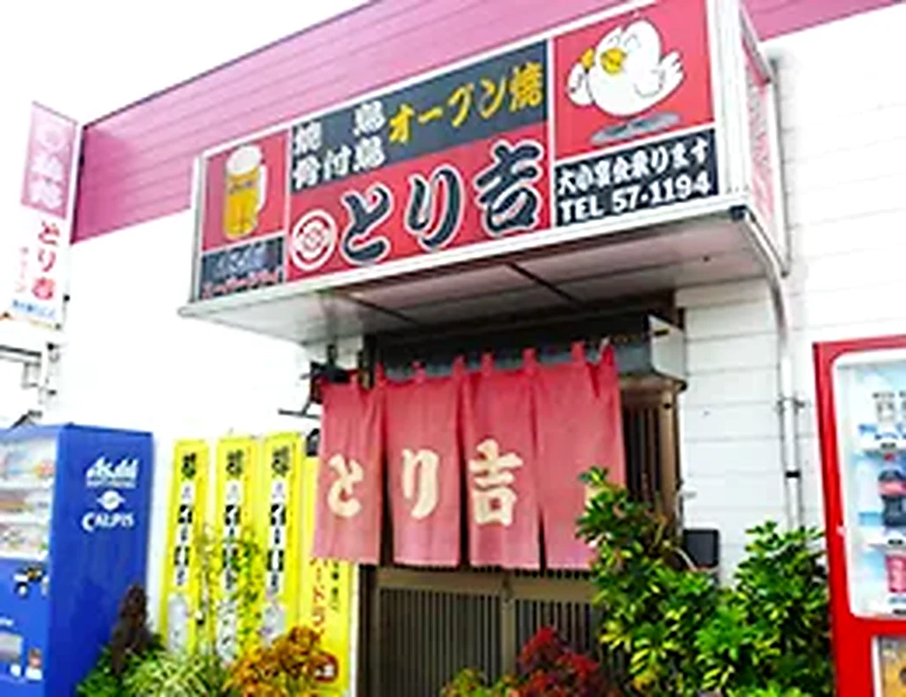
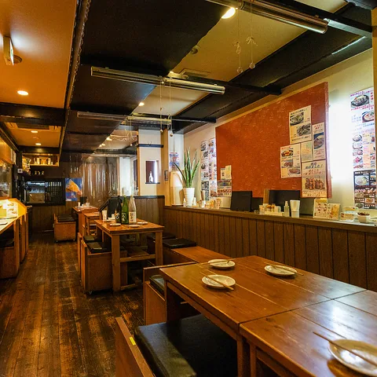
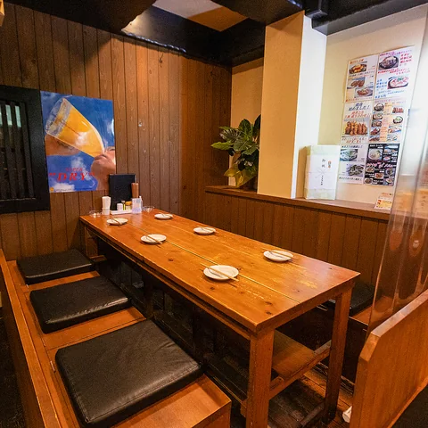
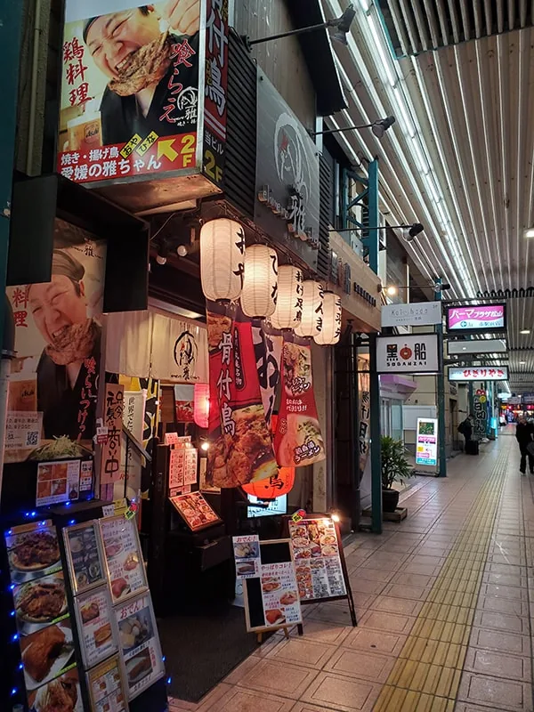
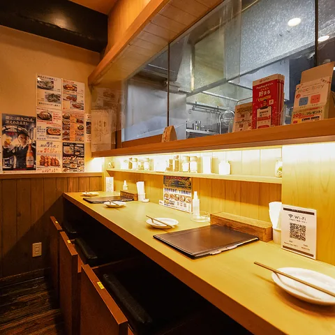
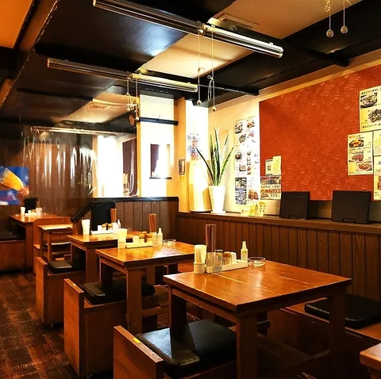
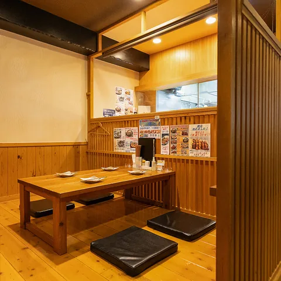
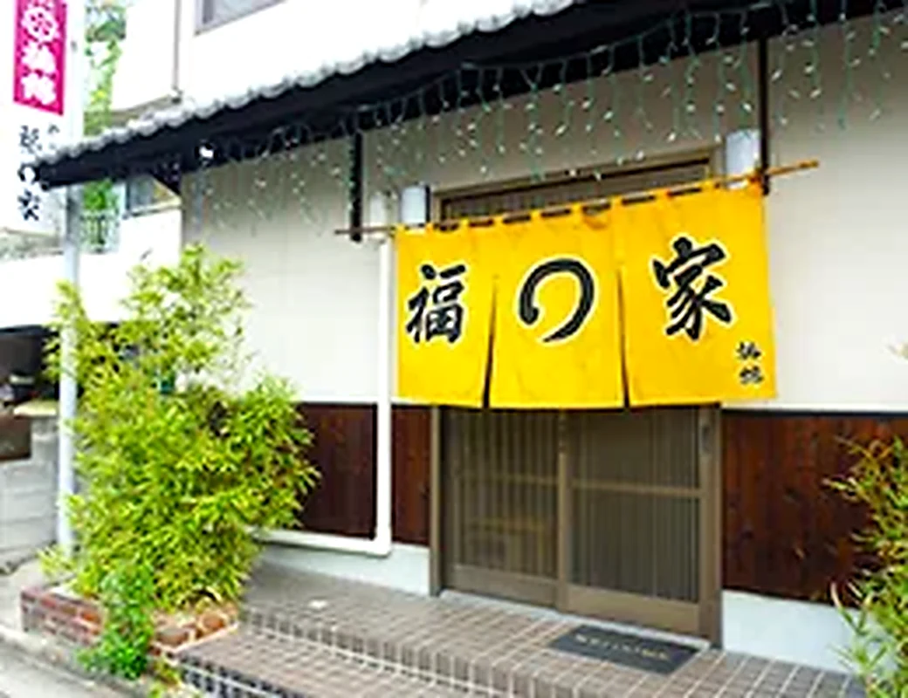

本家・とり吉（とりきち）
| 所在地 | 〒799-0113 愛媛県四国中央市妻鳥町1342-1 |
|---|---|
| TEL | 0896-57-1194 |
| 定休日 | 月曜日 |
| 営業時間 | 16:00～22:00 |
愛媛の雅ちゃん
松山市駅より徒歩1分。健勝ビル2階のご案内です。
店舗紹介
健勝ビル2階。カウンターとテーブルで、仕事帰りから宴会まで。










Access
| 所在地 | 〒790-0012 愛媛県松山市湊町5丁目4-2 健勝ビル2階 |
|---|---|
| TEL | 089-913-1194 |
| 定休日 | 日曜日・祝日 |
| 営業時間 | 17:30～23:00（ラストオーダー 22:30） |
伊予鉄・松山市駅より徒歩1分。松山市駅・北側出口を出て、すぐの横断歩道を渡りきると正面に御座います。左側にパチンコ・パワーステーションさん、右側にはひぎりやきさんが御座います。
伊予鉄高島屋さんの向かい側道路（ひぎりやきさん側）沿いに御座います。ひぎりやきさんとパチンコ・パワーステーションさんの間のビル2階で御座います。
※申し訳ありませんが、駐車場は御座いません。
※お車でのお持ち帰り（テイクアウト）時は、1階までお持ち致します。
Related
以下は姉妹店・本家の情報です。松山本店（愛媛の雅ちゃん）とは別店舗です。

| 所在地 | 〒799-0113 愛媛県四国中央市妻鳥町1342-1 |
|---|---|
| TEL | 0896-57-1194 |
| 定休日 | 月曜日 |
| 営業時間 | 16:00～22:00 |

| 所在地 | 〒799-0111 愛媛県四国中央市金生町下分222-15 |
|---|---|
| TEL | 0896-56-1129 |
| 定休日 | 日曜日 |
| 営業時間 | 昼 11:30～14:00（ラストオーダー 13:30） 夜 17:00～22:00（ラストオーダー 21:30） |